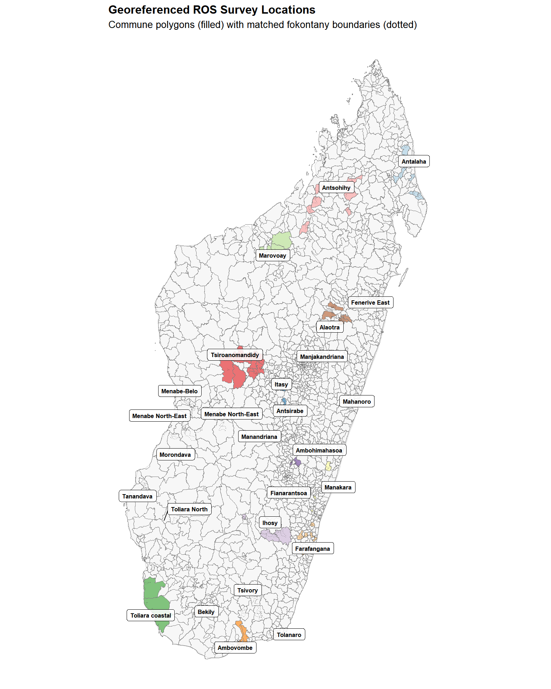
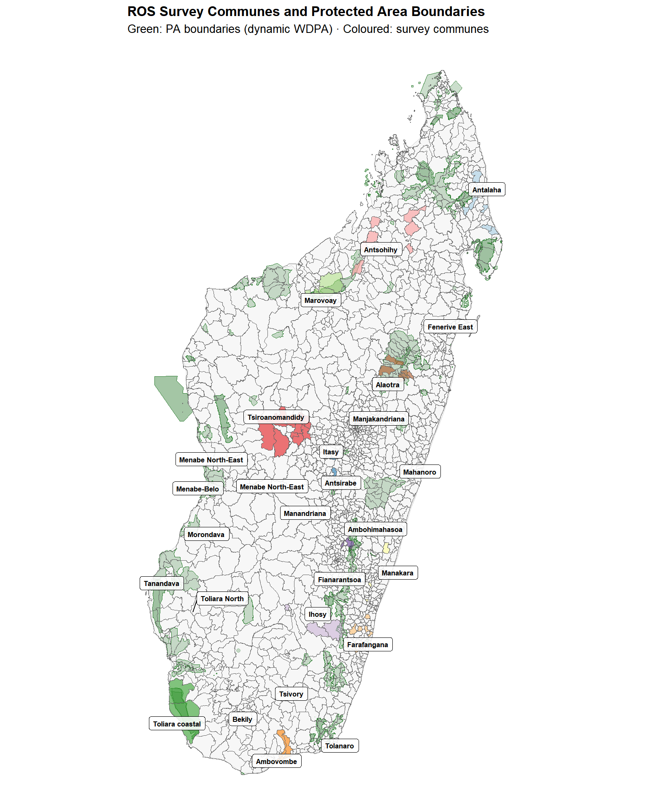
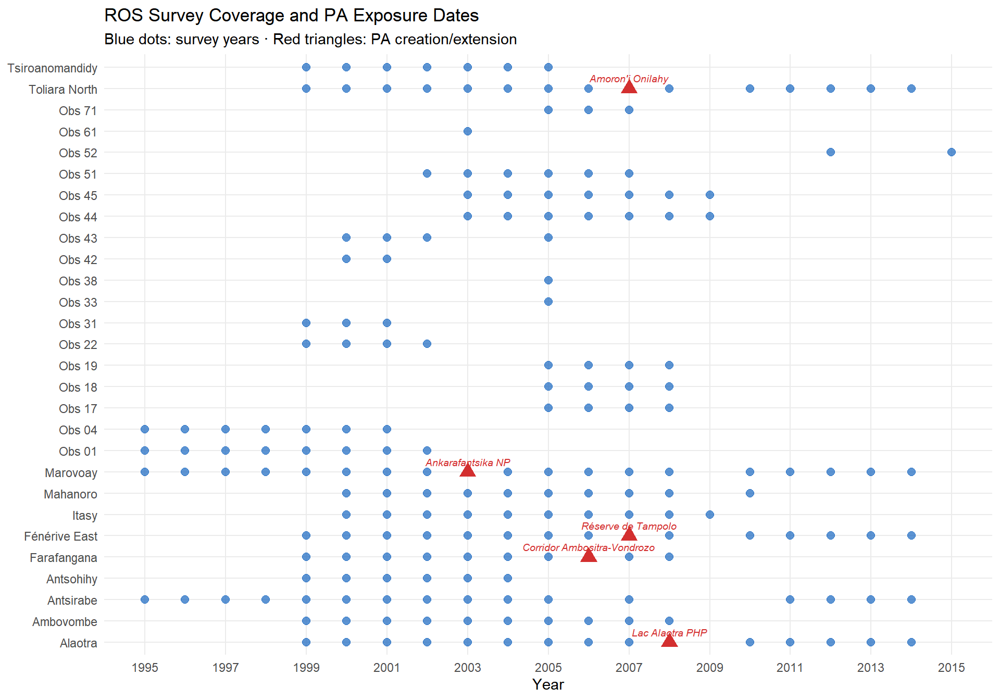

Appendix A — Data Pipeline
Georeferencing, PA overlaps, and variable harmonisation
This appendix documents the full reproducible data pipeline from raw ROS survey files to the consolidated household-level panel dataset. The paper chapter (Chapter 2) provides a condensed summary; this appendix gives all details needed for reproducibility.
B Georeferencing ROS localities
B.1 The problem
The Rural Observatory System collected household panel data in rural Madagascar from 1995 to 2015. Critically, surveys were not geolocated: location fields were free-text, not linked to official administrative codes. To enable spatial analysis — particularly overlay with protected-area boundaries — every ROS observation must be aligned with a standardised commune and fokontany using P-codes from the OCHA/BNGRC Common Operational Datasets (CODs).
B.2 Reference datasets
Two spatial reference datasets anchor the georeferencing:
- Madagascar Subnational Administrative Boundaries (COD-AB): five administrative levels from country to fokontany, with official P-codes.
- Madagascar Populated Places (COD-PS): 28,184 populated places with toponyms and P-codes (source: NGA/GIST, distributed by UN OCHA ROSA).
B.3 String cleaning
All location strings are normalised before matching. The clean_string() function lowercases, strips non-alphanumeric characters, removes qualifiers (“centre”, “haut”, “bas”), translates French cardinal directions to Malagasy, standardises alternative city names (e.g. “Fort Dauphin” → “Tolanaro”), and converts Roman numerals I–VI to Arabic.
B.4 Hierarchical fuzzy matching
Matching uses Jaro-Winkler distance (default threshold 0.25), applied observatory-wise to restrict candidate sets. A four-method cascade assigns communes:
- Method 1 — Fuzzy-match the municipality field (
j42) against known observatory commune names. Visually verified; false positives removed manually. - Method 2 — For records with no municipality, extract the first word of the village name and fuzzy-match it against commune names.
- Method 3 — Fuzzy-match the full village name against COD populated places (threshold tightened to 0.22).
- Method 4 — Fuzzy-match remaining village names against already-matched names from prior steps (threshold 0.28).
After commune assignment, a dedicated fuzzy_match_village() function matches village names to ADM4 (fokontany) names within the matched commune (Jaro-Winkler threshold 0.2). A final Method 6 adds 13 hand-coded entries for observatory 52 (Menabe).
B.5 Match rates
Communes were re-identified for 91.8% of observations; villages for 61.5% of name variations. The 8.2% commune failures are concentrated in observatories with highly abbreviated or non-standard location strings. 98% of unique commune name variations and 62% of village name variations were resolved.
C Protected-area overlap analysis
C.1 Spatial overlaps
ROS commune and fokontany polygons are overlaid with the dynamic WDPA (dynamic_wdpa.rds), a temporally explicit database of PA boundaries for Madagascar. An interactive map visualises all observatory polygons against PA boundaries.

C.2 ROS survey inventory
Household-level datasets for 1995–2015 are loaded and tabulated by observatory and year. Survey continuity varies: some observatories have nearly continuous 20-year panels, others cover only 3–8 years.
| ROS Survey Inventory | |||||||||||||||||||||
| Number of households per observatory per year (blank = no survey) | |||||||||||||||||||||
| Observatory | 1995 | 1996 | 1997 | 1998 | 1999 | 2000 | 2001 | 2002 | 2003 | 2004 | 2005 | 2007 | 2011 | 2012 | 2013 | 2014 | 2006 | 2008 | 2010 | 2009 | 2015 |
|---|---|---|---|---|---|---|---|---|---|---|---|---|---|---|---|---|---|---|---|---|---|
| Obs 01 | 514 | 530 | 535 | 553 | 559 | 528 | 528 | 600 | — | — | — | — | — | — | — | — | — | — | — | — | — |
| Antsirabe | 503 | 506 | 631 | 598 | 599 | 600 | 600 | 600 | 515 | 514 | 507 | 510 | 511 | 512 | 511 | 511 | — | — | — | — | — |
| Marovoay | 500 | 511 | 508 | 672 | 520 | 519 | 518 | 518 | 518 | 516 | 231 | 518 | 521 | 519 | 519 | 519 | 518 | 518 | 518 | — | — |
| Obs 04 | 504 | 500 | 512 | 502 | 500 | 500 | 500 | — | — | — | — | — | — | — | — | — | — | — | — | — | — |
| Antsohihy | — | — | — | — | 495 | 508 | 515 | 507 | 509 | 510 | — | — | — | — | — | — | — | — | — | — | — |
| Tsiroanomandidy | — | — | — | — | 510 | 518 | 509 | 510 | 511 | 510 | 4 | — | — | — | — | — | — | — | — | — | — |
| Farafangana | — | — | — | — | 501 | 503 | 501 | 503 | 497 | 486 | 513 | 530 | — | — | — | — | 529 | 530 | — | — | — |
| Ambovombe | — | — | — | — | 544 | 552 | 548 | 544 | 549 | 550 | 550 | 544 | — | — | — | — | 550 | 542 | — | — | — |
| Obs 17 | — | — | — | — | — | — | — | — | — | — | 540 | 538 | — | — | — | — | 540 | 538 | — | — | — |
| Obs 18 | — | — | — | — | — | — | — | — | — | — | 513 | 513 | — | — | — | — | 513 | 516 | — | — | — |
| Obs 19 | — | — | — | — | — | — | — | — | — | — | 504 | 504 | — | — | — | — | 504 | 500 | — | — | — |
| Alaotra | — | — | — | — | 518 | 517 | 518 | 518 | 505 | 503 | 504 | 504 | 504 | 504 | 504 | 503 | 504 | 503 | 504 | — | — |
| Obs 22 | — | — | — | — | 499 | 501 | 502 | 502 | — | — | — | — | — | — | — | — | — | — | — | — | — |
| Toliara North | — | — | — | — | 501 | 502 | 501 | 501 | 501 | 501 | 15 | 520 | 520 | 520 | 520 | 520 | 502 | 520 | 520 | — | — |
| Fénérive East | — | — | — | — | 500 | 501 | 501 | 502 | 502 | 501 | 501 | 505 | 501 | 511 | 511 | 511 | 501 | 502 | 501 | — | — |
| Mahanoro | — | — | — | — | — | 502 | 504 | 506 | 500 | 500 | 500 | 513 | — | — | — | — | 512 | 512 | 515 | — | — |
| Obs 31 | — | — | — | — | 590 | 590 | 525 | — | — | — | — | — | — | — | — | — | — | — | — | — | — |
| Obs 33 | — | — | — | — | — | — | — | — | — | — | 13 | — | — | — | — | — | — | — | — | — | — |
| Obs 38 | — | — | — | — | — | — | — | — | — | — | 1 | — | — | — | — | — | — | — | — | — | — |
| Itasy | — | — | — | — | — | 510 | 521 | 520 | 500 | 500 | 510 | 510 | — | — | — | — | 510 | 510 | — | 510 | — |
| Obs 42 | — | — | — | — | — | 505 | 504 | — | — | — | — | — | — | — | — | — | — | — | — | — | — |
| Obs 43 | — | — | — | — | — | 500 | 500 | 500 | — | — | 9 | — | — | — | — | — | — | — | — | — | — |
| Obs 44 | — | — | — | — | — | — | — | — | 522 | 522 | 510 | 510 | — | — | — | — | 510 | 510 | — | 510 | — |
| Obs 45 | — | — | — | — | — | — | — | — | 501 | 500 | 511 | 511 | — | — | — | — | 511 | 510 | — | 511 | — |
| Obs 51 | — | — | — | — | — | — | — | 504 | 510 | 510 | 510 | 507 | — | — | — | — | 509 | — | — | — | — |
| Obs 52 | — | — | — | — | — | — | — | — | — | — | — | — | — | 502 | — | — | — | — | — | — | 509 |
| Obs 61 | — | — | — | — | — | — | — | — | 600 | — | — | — | — | — | — | — | — | — | — | — | — |
| Obs 71 | — | — | — | — | — | — | — | — | — | — | 510 | 510 | — | — | — | — | 510 | — | — | — | — |
C.3 Temporal overlap logic
Three scenarios determine usability for impact evaluation:
- PA predates ROS entirely → no pre-treatment baseline → unusable (e.g. Ranomafana, created 1991).
- PA created during ROS surveys → impact analysis possible → these are our exposure cases.
- PA created after ROS ended → baseline only; resurvey needed for evaluation.
C.4 Decree date revision
Official creation years were cross-checked against the Madagascar legal database (CNLEGIS). Several temporary decree dates were revised:
| PA | Original year | Revised year | Source |
|---|---|---|---|
| Ankarafantsika NP | 1927 | 2002 | Decree 2002-798 (extension) |
| Lac Alaotra PHP | 2003 | 2007 | Temporary decree |
| Corridor Ankeniheny–Zahamena | 2002 | 2005 | Temporary decree |
| Menabe Antimena | 2003 | 2006 | Temporary decree |
| Corridor Ambositra-Vondrozo | 2003 | 2006 | WDPA / CNLEGIS |
| Mikea NP | 2003 | 2007 | Temporary decree |
| Ranobe PK 32 | 2003 | 2008 | Temporary decree |
| Amoron’i Onilahy | 2003 | 2007 | Temporary decree |

C.5 Priority pairs
The spatial and temporal overlay identifies Marovoay–Ankarafantsika and Alaotra–Lac Alaotra as the most promising pairs for causal analysis (long panels, clear exposure dates). Farafangana, Toliara North, and Fénérive East are secondary candidates explored in Chapter 5. A 10 km buffer (CRS EPSG:29701, Laborde Madagascar) around PAs is used for the proximity screening.
Note
ROS observatories were selected for agricultural and socio-economic monitoring, not proximity to PAs. Overlaps are partly coincidental and require cautious interpretation.
D Variable construction
D.1 Georeferencing households
Household identifiers (j5) are joined to the locality correspondence table from Appendix B. A critical correction: 1995 household IDs are re-aligned using the 1996 survey (which records whether a household was surveyed in 1995 and provides its 1996 identifier).
D.2 Household composition
Individual-level files (member records) provide sex, age, and headship. Households with multiple heads are resolved by keeping the first member ID. Key variables: household_size (member count) and head’s sex and age.
D.3 Education
Education variables present several data gaps:
- Literacy (
s1a,s1b): missing in 1996 and 1998. - Primary school attendance (
s2): missing in 1996. - Years of schooling (
s3a): missing in 1996.
Household-level indicators are constructed: any_literate_adult (≥1 adult reads), max_years_edu, mean_years_edu_adults, pct_with_schooling (share of members ≥6 with any schooling), and head’s education variables.
D.4 Agricultural activities
Activity codes (a1) are harmonised across the 1996–2015 coding schemes. 1995 is a special case: no individual a1 variable; activities are reconstructed from separate main/secondary activity files (res_apm.dta, res_asm.dta). Two agricultural classifications are used:
- Stricto sensu (codes 95, 96): farming or livestock only.
- Lato sensu (19 codes): farming, livestock, fishing, gathering, apiculture, agriculture-related crafts.
D.5 Food security
The core measure is months of food self-sufficiency from own production, harmonised across varying question formats:
- 1995: single question (
sa3a). - 1996–1997: single question (
sa2). - 1998–2015: three components (
sa2a+sa2b+sa2cfor rice 1st season + rice 2nd season + maize).
Summed and capped at 12 months.
D.6 Income construction
Income is reconstructed via dedicated functions for each component:
- Current income = main activity + secondary activity + net rice + other crops + livestock + fishing.
- Exceptional income = land rents + miscellaneous + HIMO (public works) + asset sales + monetary and non-monetary transfers.
- Total income (
revtot) = current + exceptional.
The OECD-modified equivalence scale assigns weight 1.0 to the first adult, 0.5 to each additional adult (≥14), and 0.3 to each child (<14). OECD-equivalised income = revtot / oecd_scale. Both total and equivalised income are log-transformed and winsorised at the 1st–99th percentiles for the main analysis.
| Income Component Construction | |||
| From ROS household surveys to analysis-ready income variables | |||
| Component | Variables | Coverage | Notes |
|---|---|---|---|
| Rice income (net) | rev_riz | 1995–2015 | Revenue minus production costs |
| Other crops | rev_cu | 1995–2015 | Cash crops, fruit, vegetables |
| Livestock | revel | 1995–2015 | Cattle, poultry, other animals |
| Fishing | revpeche | 1995–2015 | Inland and coastal |
| Main activity | revppal | 1995–2015 | Primary non-agricultural activity |
| Secondary activity | revsec | 1995–2015 | Secondary non-agricultural activity |
| Current income | revcou | Derived | Sum of 6 components above |
| Exceptional income | revext | 1995–2015 | Land rents, transfers, HIMO, asset sales |
| Total income | revtot | Derived | Current + exceptional |
| OECD-equiv. income | revtot / oecd_equiv | Derived | Scale: 1.0 + 0.5×(adults−1) + 0.3×children |
D.7 Consolidation
All component tables are deduplicated to unique (year, household ID) via mean aggregation, then left-joined into a single dataset: household_consolidated.rds (101,253 household-year observations across 11 observatories). A uniqueness check confirms one row per household per year.